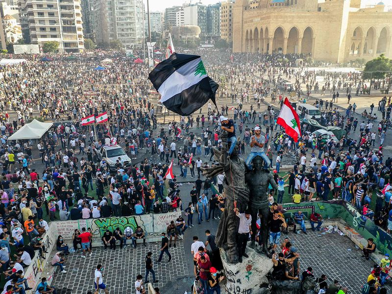
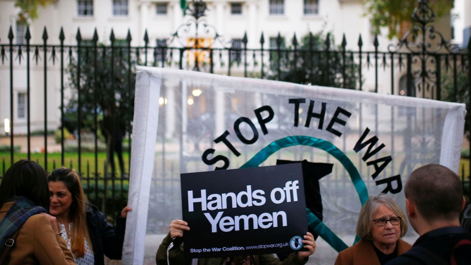
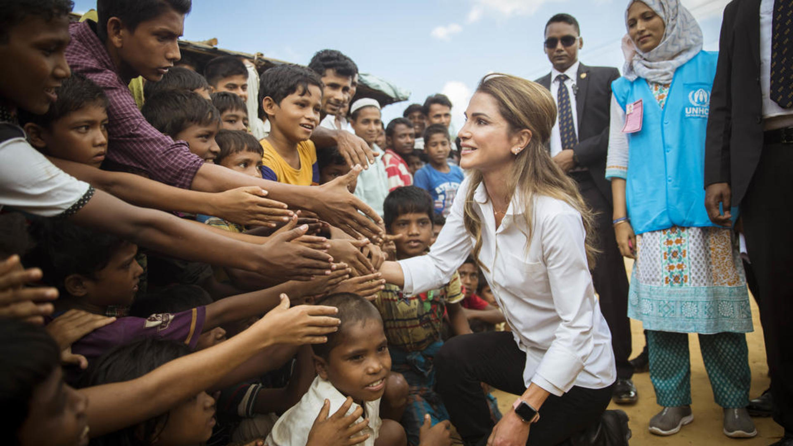
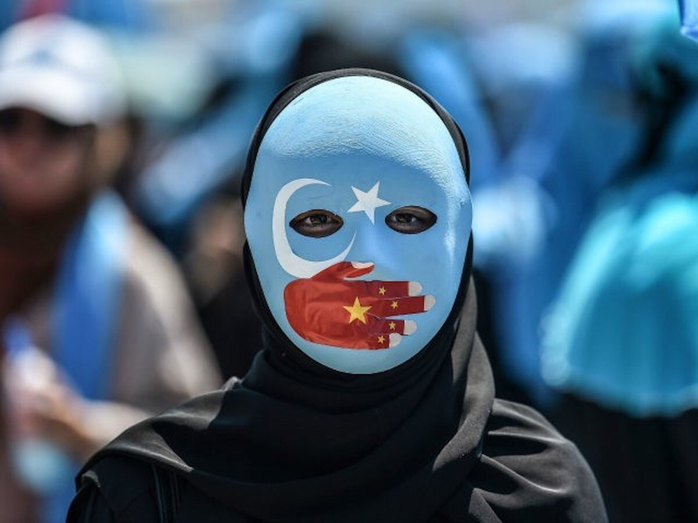

Within Lebanon, a famine is currently ruining the lives of many living there. The situation has resulted in thousands of people entering poverty and losing resources. Without services being provided to them, a large number of people began to protest against the government, leading to the crisis ongoing currently.

The Black Lives Matter Movement was accelerated due to the death of George Floyd and many other black civilians. The black community, along with many other communities, did not take this lightly and began to protest in a fight against systemic racism to better the future of their brothers and sisters.

Due to a civil war that occurred within Yemen, the country is currently facing an insatiable famine. As most of Yemen is in poverty and on the brink of starvation, the government has made it a lot harder by cutting off resources from its civilians.

Within Myanmar, many Rohingyans were forced to flee from their homes due to the ethnic cleansing brought by the Myanmar government. They found refuge in countries such as Bangladesh and India after the Myanmar Government burned their villages and killed many.

❮
❯
The Uyghur Muslims lived in Xinjiang, China, and were put into concentration camps because the government saw their native customs, languages, and traditions as a threat. Previously they were living in overcrowded, closed spaces, and poor medical facilities. Now, however, they are facing oppression from the government and are being put into internment camps where they are beaten and abused. Unfortunately, many in China do not know of the Uyghur’s treatment as the government’s censorship hasn’t allowed word of the situation to get out.